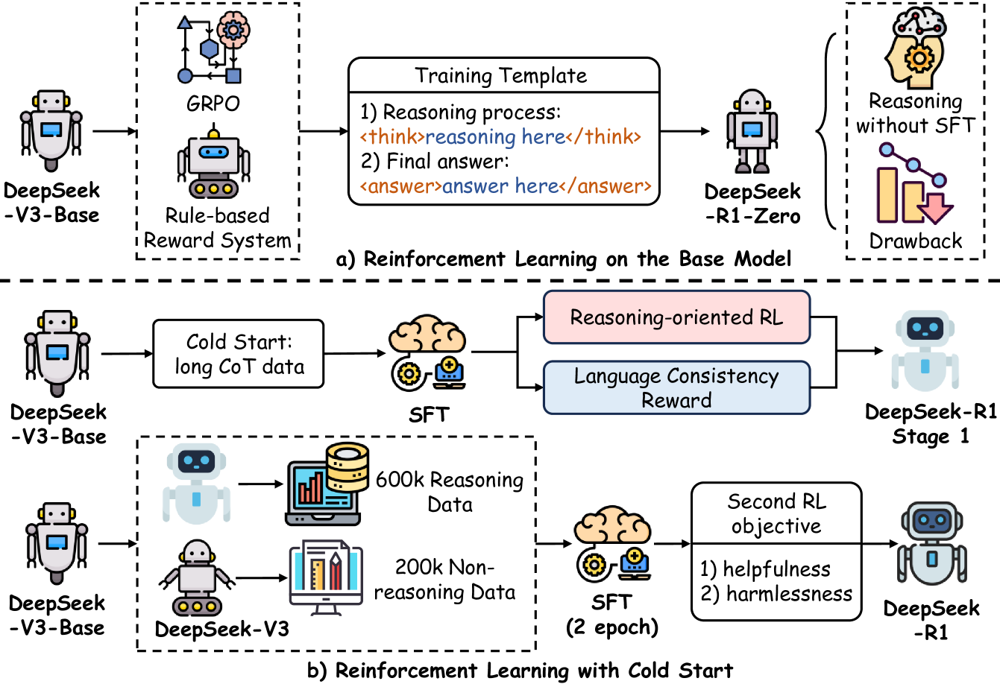

2.1 DeepSeek -- 纯 RL 到 Specialist Distillation¶
本节摘要
DeepSeek 系列在后训练领域建立了三条关键路径：R1 证明纯 RL 可从零涌现推理能力，V3 展示蒸馏以极低成本获取推理能力的路径（后训练仅占总成本 0.18%），V3.2 引入 Specialist Distillation 与 GRPO 工程化改进，将后训练预算提升至预训练的 >10%，实现 AIME 从 39.2 到 93.1 的质变。
阅读说明
本章对 2024-2026 年主流大模型的 Post-Training 技术报告进行深度解读。分析以原始论文为依据，重点关注训练动机、Pipeline 设计、算法创新和工程经验。
详略安排：
- 深度解读（一至六节）：DeepSeek（含 V3.2）、Kimi、Qwen（含 SAPO）、MiniMax、GLM、Seed 六大系列 -- 均有完整技术报告，Post-Training 方法论对领域有显著推动
- 概要总结（第七节）：OpenAI、Google、Anthropic 等闭源模型 -- 技术披露有限，侧重可考证的关键信息
- 跨模型分析（第八节）：纵向演进与横向比较，提炼共性经验与趋势
每个系列的分析遵循"动机 -- 方法 -- 发现 -- 演进"的结构，确保既有技术深度，也有系列间的可比性。
报告来源
- DeepSeek-R1: Incentivizing Reasoning Capability in LLMs via Reinforcement Learning, arXiv:2501.12948 (2025.01)
- DeepSeek-V3: DeepSeek-V3 Technical Report, arXiv:2412.19437 (2024.12)
- DeepSeek-V3.2: DeepSeek-V3.2 Technical Report, arXiv:2512.02556 (2025.12)
DeepSeek 系列在 Post-Training 领域的核心贡献有二：R1 证明了纯 RL 可以从零涌现推理能力，V3 则展示了通过蒸馏以极低成本获取推理能力的路径。两者共同奠定了 2025 年后训练范式的基础。
DeepSeek-R1 -- 纯 RL 推理涌现¶

核心动机¶
R1 面对的核心问题是：如何让模型学会复杂的多步推理（如竞赛级数学），而不需要昂贵的人工推理链标注？ 传统 SFT on CoT 路线受限于标注员的推理能力和成本。DeepSeek 的假设是：基座模型在预训练中已蕴含推理的"种子"，RL 的作用是选择性地激活和强化这些种子。
R1-Zero：纯 RL 的涌现实验¶
DeepSeek 做了一个极端实验——R1-Zero：跳过所有 SFT，直接在 DeepSeek-V3 Base（671B MoE, 37B 激活参数）上做 GRPO，仅使用规则奖励（数学正确性 + 格式约束），不用任何神经网络 RM。
涌现行为（报告 Figure 3-4）
- "aha moment": 模型自发学会 "Wait, let me reconsider..." 并纠正推理错误 -- 自我反思能力从 RL 中自然涌现
- 思维链自然延长: 困难问题上自动生成更长的推理过程，学会按需分配"思考预算"
- 自我验证: 学会回头检查计算结果，"wait"、"alternatively" 等反思词频增加 5-7 倍
暴露的问题
语言混杂（多种语言混用）、可读性差、格式不稳定。说明纯 RL 能涌现推理能力，但需要 SFT 提供基本的格式和可读性约束。
R1-Zero 在 AIME 2024 达到 71.0%（对比 V3 Base 的 39.2%），证明了假设的成立。
四阶段 Pipeline¶
flowchart TD
Base([DeepSeek-V3 Base\n671B MoE]) --> S1[Cold Start SFT\n数千条长 CoT]
S1 --> S2[Reasoning RL\nGRPO 与规则奖励]
S2 --> S3[Rej. Sampling SFT\n~800K 样本]
S3 --> S4[All-Scenario RL\n多 RM 联合]
S4 --> Final([DeepSeek-R1\nAIME 79.8%])数据来源与步数细节见下表。
关键设计细节（报告 Section 3-4）：
| 阶段 | 关键数据 | 设计理由 |
|---|---|---|
| Cold Start SFT | 数千条样本，来源含 R1-Zero 过滤输出 + 人工精修 | 最小化 SFT 数据量，保留 RL 探索空间 |
| Reasoning RL | LR=3×10⁻⁶, G=16 outputs/query, max 65K tokens | GRPO 无需 Critic，节省 ~25%+ 显存 |
| Rej. Sampling SFT | 800K 样本（数学 395K, 代码 211K, STEM 10K, 逻辑 10K, 通用 178K） | 从 V3-Base 重新训练（非继续训练），避免 RL 阶段引入的分布偏移 |
| All-Scenario RL | 偏好 RM 仅评估最终摘要（非推理过程），安全 RM 使用 106K 数据 | 偏好 RM 仅用于最后 400/1700 步，更长暴露会导致 reward hacking |
GRPO 的选择理由¶
对 671B MoE 模型，训练同等规模的 Critic 网络显存不可承受。GRPO 通过 group 内相对优势代替 value baseline：
数学/代码任务有确定答案，规则奖励 + Group Relative 优势已够用，同时避免 Critic 在长 CoT 中的累积误差。
失败尝试（报告 Section 3.4 -- 极有价值的负面结果）¶
| 尝试 | 结果 | 报告分析 |
|---|---|---|
| Process Reward Model (PRM) | 效果不如 Outcome RM | 中间步骤难以精确标注正确性，大规模 RL 中 reward hacking 不可避免，重新训练 PRM 增加复杂度 |
| Monte Carlo Tree Search (MCTS) | 在 LLM 场景不 work | 搜索空间指数级增长（token-level >> 棋盘游戏），value 估计不准，AlphaGo 式迭代自我改进未能复现 |
| 直接基座 RL（R1-Zero） | 能力涌现但不可用 | 需要 SFT 提供格式约束 |
蒸馏模型：蒸馏 >> 直接 RL¶
R1 报告的另一个关键发现是蒸馏的效率远超直接 RL。用 R1 生成的 804K 推理样本对小模型做纯 SFT（无 RL），效果碾压同尺寸模型的直接 RL：
| 模型 | 方法 | AIME 2024 |
|---|---|---|
| Qwen2.5-32B + RL (10K+ steps) | 从头 RL | 47.0 |
| QwQ-32B-Preview | RL | 44.0 |
| R1-Distill-Qwen-32B | SFT 蒸馏 | 72.6 |
| R1-Distill-Qwen-1.5B | SFT 蒸馏 | 28.9（超过 GPT-4o 的 9.3） |
核心发现
蒸馏比直接 RL 高出 +25 AIME 分。大教师模型的推理模式通过 SFT 迁移比小模型通过 RL 自行发现高效得多。报告指出在蒸馏模型上进一步做 RL "会显著提升性能"，但留给社区探索。
DeepSeek-V3 -- 高效后训练与蒸馏¶
核心动机¶
V3 面对的问题是：如何在已有 R1 推理能力的前提下，高效地将这种能力整合到通用模型中？ 从头做 RL 太贵，但直接 SFT on R1 数据又会损失通用性。
Post-Training Pipeline¶
flowchart TD
S1([双轨 SFT\n~1.5M]) --> S1a[R1 蒸馏推理数据]
S1 --> S1b[通用 V2.5 数据]
S1a --> S2[GRPO\n规则与模型 RM]
S1b --> S2
S2 --> S3([Self-Rewarding\nRewardBench 87])样本规模与 epoch 见正文；R1 蒸馏含标准回答与长 CoT 两种格式。
R1 蒸馏的具体流程（报告 Section 5）：
- 用内部 R1 模型生成原始推理数据
- 训练领域专家模型（SFT + RL）
- 两种 SFT 样本类型：标准
<problem, response>和 R1 风格<system_prompt, problem, R1_response>（含反思/验证） - 高温 RL 整合两种模式
- Rejection Sampling 选出简洁、高质量的输出
Self-Rewarding: V3 自身作为 judge（Constitutional AI 思路），在 RewardBench 上达到 87.0（maj@6 投票 89.6），与 Claude-3.5-Sonnet（88.7）和 GPT-4o（86.7）相当。
极致成本效率¶
| 阶段 | H800 GPU Hours | 成本 |
|---|---|---|
| 预训练 | 2,664K | $5.328M |
| 上下文扩展 | 119K | $0.238M |
| 后训练 | 5K | $0.01M |
| 总计 | 2,788K | $5.576M |
核心发现
Post-Training 仅占总训练成本的 0.18%（5K GPU hours / $10K）。这证明在有强教师模型（R1）的前提下，蒸馏 + Self-Rewarding 可以实现极高的后训练效率。
Multi-Token Prediction (MTP)¶
V3 引入 D=1 的 MTP 模块，在推理时用于投机解码，接受率 85-90%，实现 1.8× TPS 加速。MTP 模块在训练完成后可丢弃（除非用于投机解码），训练损失权重从 λ=0.3 逐步降至 0.1。
DeepSeek-V3.2 -- Specialist Distillation 与 GRPO 工程化¶
论文来源
arXiv:2512.02556 -- DeepSeek-V3.2 Technical Report (2025.12)
核心动机¶
V3.2 面对的问题是：V3 的蒸馏路线虽然高效，但后训练成本仅占预训练的 0.18%，是否意味着后训练的潜力远未被开发？ V3.2 的回答是肯定的 -- 将后训练计算预算提升至预训练成本的 >10%，并用全新的 Specialist Distillation 范式替代简单的 R1 蒸馏。
架构变化¶
V3.2 的基础架构与 V3/V3.1 完全相同（671B MoE, 37B 激活），唯一的架构新增是 DeepSeek Sparse Attention (DSA) -- 通过在 V3 checkpoint 上继续训练约 946B tokens 来适配。V3.2 论文未提及 MTP。
三阶段后训练 Pipeline¶
flowchart TD
Base([V3.1 + DSA 续训]) --> S1[Specialist Distillation\n8 域专家 RL]
S1 --> S2[Mixed GRPO\n推理与 Agent]
S2 --> S3[V3.2-Speciale\n长链推理变体]
S3 --> Final([DeepSeek-V3.2\nAIME 93.1%])IMO / IOI 等完整榜单见下文「关键结果」表。
阶段 1：Specialist Distillation -- 这是 V3.2 最核心的方法论创新，与 V3 的 R1 蒸馏有本质区别：
| 维度 | V3 的 R1 蒸馏 | V3.2 的 Specialist Distillation |
|---|---|---|
| 教师来源 | 单一 R1 模型 | 8 个领域专家模型 |
| 专家训练 | 无（直接用 R1 输出） | 每个专家经过大规模 RL 训练 |
| 蒸馏方式 | SFT on R1 数据 | 8 个专家各自蒸馏后合并 |
| 覆盖领域 | 主要是推理 | 数学、代码、科学、写作、Agent 等 8 个域 |
核心发现：Specialist Distillation >> 单一教师蒸馏
每个领域专家在其专属域上经过充分 RL 训练后再蒸馏，比从单一通用教师蒸馏效果显著更好。这相当于将"分治法"引入蒸馏 -- 先分域优化，再合并。
阶段 2：Mixed RL -- 单一统一的 GRPO 阶段，同时处理推理任务、Agent 任务和人类偏好对齐。V3 需要多个 RL 阶段分别处理不同任务类型，V3.2 将它们合并为一个阶段。
阶段 3：V3.2-Speciale -- 推理专用变体，通过放松长度惩罚允许模型使用更多 token 来"深度思考"。
四个 GRPO 稳定化创新¶
V3.2 报告了 4 个 GRPO 训练稳定性技巧，每个都针对具体问题：
| 技巧 | 问题 | 解决方案 |
|---|---|---|
| Unbiased KL Estimate | 标准 K3 KL 估计器有偏 | 使用无偏 KL 估计替代，提高梯度信号质量 |
| Off-Policy Sequence Masking | 高 KL 偏差的负优势序列引入噪声 | 对负优势且 KL 偏离大的序列整体 mask |
| Keep Routing | MoE 专家路由在采样和训练间不一致 | 保留采样时的路由决策用于训练（自 V3-0324 起采用） |
| Keep Sampling Mask | top-p/top-k 截断掩码在训练时丢失 | 保留采样时的 truncation mask 用于概率计算 |
Keep Routing 的重要性
Keep Routing 解决的问题与 GSPO/CISPO 诊断的问题同源 -- MoE 专家路由的不一致导致 token 级概率计算不稳定。但 V3.2 选择了不同的解决路径：固定路由（而非改变 ratio 计算方式）。这是另一种有效的 MoE RL 稳定化策略。
后训练成本的剧变¶
| 指标 | V3 | V3.2 |
|---|---|---|
| 后训练占预训练比例 | 0.18% | >10% |
| 后训练 GPU Hours | ~5K H800 | 数十万级（未精确公开） |
后训练计算量增加了约 50 倍以上。V3.2 团队明确表示 "RL scaling has not saturated" -- 持续增加 RL 预算仍能稳定提升性能。
关键结果¶
| Benchmark | V3.2 | V3 | 提升 |
|---|---|---|---|
| AIME 2025 | 93.1% | -- | -- |
| IMO 2025 | Gold (35/42) | -- | -- |
| IOI 2025 | Gold (10th) | -- | -- |
| ICPC WF 2025 | Gold (2nd) | -- | -- |
| Benchmark | V3.2-Speciale | V3.2 (通用) |
|---|---|---|
| AIME 2025 | 96.0% | 93.1% |
| HMMT Feb 2025 | 99.2% | -- |
| Token 消耗 | 2-3× 更多 | 基线 |
负面结果与局限¶
V3.2 的已知局限
- Token 效率不足：V3.2-Speciale 在推理任务上消耗的 token 是 Gemini-3.0-Pro 的 2-3 倍
- 上下文溢出：在长 Agent 任务中，128K 上下文窗口不够用，出现上下文溢出
- IMO P6 = 0：在 IMO 2025 最难题上得零分，说明极端推理能力仍有天花板
- 域间 KL 调节：数学任务从弱/无 KL 惩罚中受益，但其他领域需要更强的 KL 约束 -- 需要域特定的超参数调节
系列演进分析¶
| 维度 | DeepSeek-V3 (2024.12) | DeepSeek-R1 (2025.01) | DeepSeek-V3.2 (2025.12) |
|---|---|---|---|
| 核心定位 | 通用模型 + 推理增强 | 专用推理模型 | 通用 + 推理统一 |
| 后训练核心策略 | R1 蒸馏 + Self-Rewarding | 纯 RL 涌现 + 多阶段精炼 | Specialist Distillation + Mixed RL |
| RL 算法 | GRPO | GRPO | GRPO（4 项稳定化改进） |
| RM 设计 | 自身作为 judge + 规则 RM | 规则 RM 为主 + 偏好 RM（受限使用） | 规则 RM + 域特定 KL 调节 |
| 后训练成本 | 5K H800 hours | 147K H800 hours | >预训练 10%（数十万级） |
| AIME 2024 | 39.2 | 79.8 | -- |
| AIME 2025 | -- | -- | 93.1（通用）/ 96.0（Speciale） |
| 技术遗产 | MTP 投机解码、Self-Rewarding | GRPO 范式、蒸馏方法论、"RL 释放能力"假说 | Specialist Distillation、Keep Routing、"RL scaling 未饱和" |
DeepSeek 系列的关键贡献在于建立并演进了三条后训练路径：R1 式纯 RL 涌现、V3 式高效蒸馏、以及 V3.2 式 Specialist Distillation + 大规模 Mixed RL。V3.2 的出现证明了后训练的投资回报率远未触顶 -- 将后训练预算从 0.18% 提升到 >10% 带来了质的飞跃（AIME 39.2 → 93.1）。
截至 2026 年 3 月的后续更新
DeepSeek 发布了 R1-0528（2025.05，更新版 R1 checkpoint）、DeepSeek-Prover-V2（arXiv:2504.21801，形式化定理证明）、V3.2（2025.12，Specialist Distillation + GRPO 工程化） 等衍生模型，但尚未发布 R2 或 V4。V3.2 的 Specialist Distillation 范式和 GRPO 稳定化技巧已成为后训练方法论的重要参考。